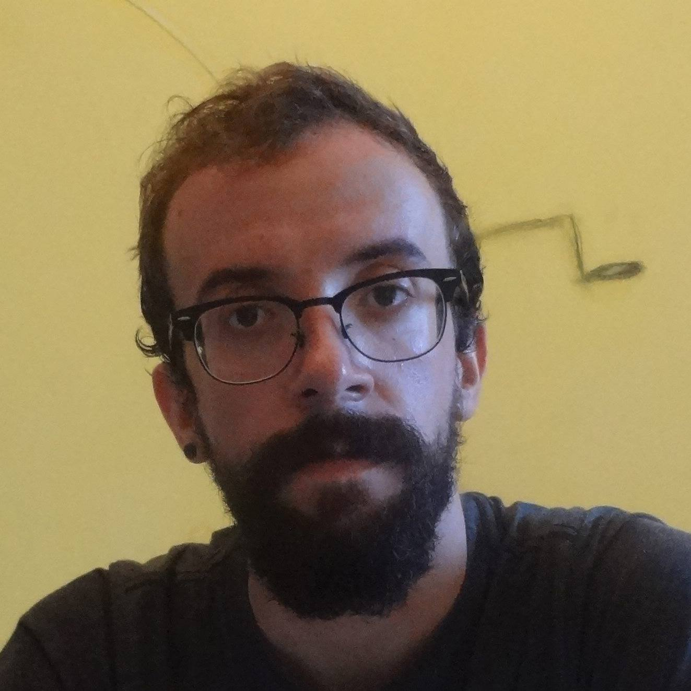

|  |
André Gomes Pacheco
Psicanalista, membro do Instituto Vox de Pesquisa e Formação em Psicanálise
Atendo em consultório particular desde 2018, dedicando-me à prática psicanalítica com base nos trabalhos
de Freud e Lacan. Previamente, trabalhei por 5 anos no Centro de Referência de DST e Aids de Campinas.
Sou graduado em psicologia pela USP e mestre em saúde coletiva pela Unicamp, tendo realizado pesquisa sobre
a mortalidade de homens por causas externas. Atualmente, dedico parte de meu tempo a estudar linguagem
de programação, com ênfase em Python. |